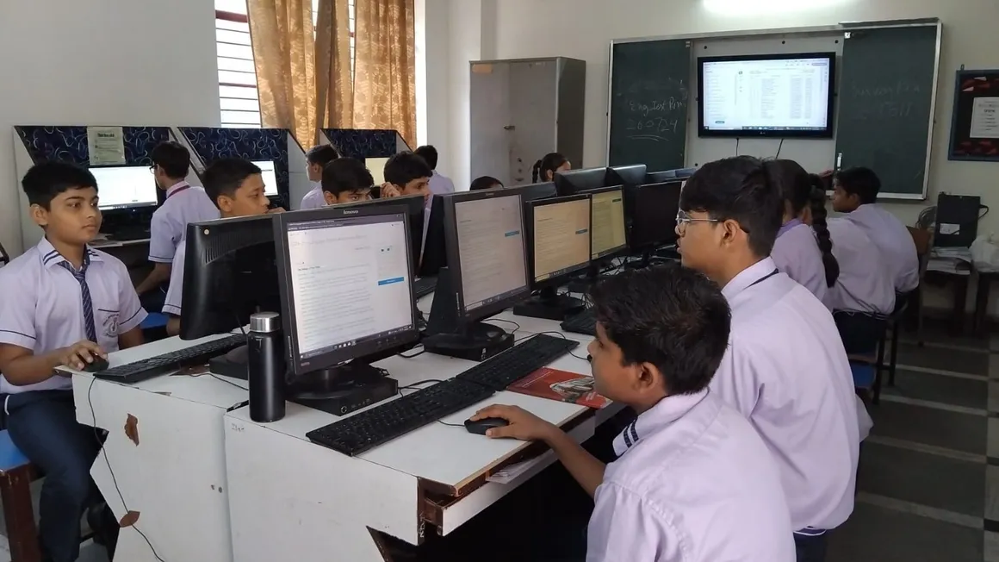

Modern Infrastructure
State-of-the-art facilities for holistic development.

Academic Excellence
Innovative teaching methods for conceptual learning.

Co-curricular Activities
Encouraging creativity and teamwork beyond the classroom.